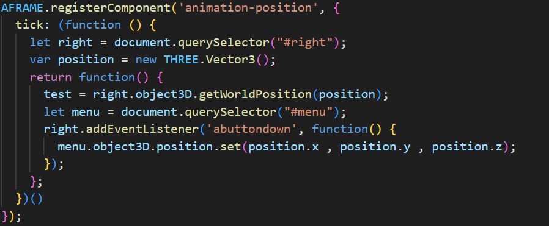
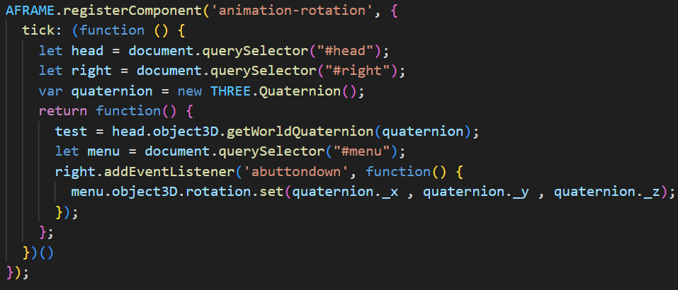

HellCleaner est un jeu au charme rafraîchissant, mais dissimulant un sombre secret ! Un individu
mystérieux a semé le trouble et la saleté dans ShinyCity, plongeant les habitants dans la panique,
les contraignant à déserter la ville désormais rebaptisée DirtyCity.
Votre mission consiste à purger la cité de cette impureté. HellCleaner est un jeu d'exploration où
l'objectif est de nettoyer intégralement DirtCity, en collectant toute la saleté qui la pollue.
Le thème central de notre jeu est la pollution urbaine engendrée par les déchets. Le concept du jeu
repose sur l'exploration d'une ville jonchée de divers "objets" souillants tels que des canettes de
soda, du plastique ou encore des papiers journaux, que le joueur peut interagir avec afin de les
ramasser.
Comment jouer ?
Pour jouer à HellCleaner VR, c'est assez simple. Le jeu est compatible VR
avec les casques Meta Quest ou Vive, mais également en version web avec les touches ZQSD et votre
souris.
Jouer en VR :
Pour jouer en VR, il vous suffit d'apprendre seulement 3 boutons.
Sur Oculus :
Le bouton "A" ouvre le menu du jeu, où vous pouvez changer de niveau et consulter le
nombre de déchets récupérés dans le niveau.
La gâchette permet de récupérer les déchets et d'interagir avec les boutons et les
menus.
Le joystick permet de se déplacer par téléportation en pointant simplement dans la
direction où vous souhaitez vous rendre.
Sur Vive :
Il faut cette fois-ci appuyer sur la gâchette située à gauche de la manette pour ouvrir
le menu.
Ici, la gâchette permet de récupérer les objets et d'interagir avec les boutons et les
menus.
Pour vous déplacer, maintenez pressé le joystick et pointez dans la direction où vous
souhaitez aller.
Les déchets à récupérer :
Il y a 2 types de déchets a récupérer dans le jeu. Le nombre de déchets a récupérer par
parties et aléatoire et leurs postion aussi comme ça vvous pourrez recommencer le jeu autant de fois
que vous le voulez et si vous parvenez a tous les trouvez ou récompense vous attendras peut être !!!
Fonctionnement du code
Scene Loader
Pour les niveaux, notre logique est de charger/décharger une scène, en jouant sur son attribut
"visible". Ce ne sont pas des "scène" a proprement parlé, mais des entités avec un identifiant
(comme "scene_tuto", "scene_lvl1") car dans a-frame, on ne peut avoir qu'une seule balise a-scene.
Position du menu

"Pour pouvoir changer de niveau, nous avons créé un menu qui s'ouvre en appuyant sur un bouton de la
manette. Grâce à l'A-Frame register component "menu-position", il se positionne à la position de
notre personnage pour s'ouvrir toujours vers lui peu importe l'endroit où il se téléporte. Pour
faire cela, nous utilisons la fonction Three.js THREE.Vector3() qui crée un vecteur en 3 dimensions
que nous stockons dans la variable position. Ensuite, nous récupérons la position de la manette en
récupérant l'ID de la manette droite. Ensuite, nous utilisons à nouveau une fonction de Three.js :
"right.object3D.getWorldPosition(position)" pour récupérer la position de la manette dans la
variable position. À partir de là, il suffit de prendre le menu et de faire un
Object3D.position.set(position.x , position.y , position.z); et le menu apparaît à la position de la
manette au moment de la pression du bouton."
Rotation du Menu

"Ensuite, nous avons également fait en sorte que le menu s'ouvre en face de la vision du joueur.
Pour cela, nous avons créé un autre A-Frame register component "menu-rotation". Le principe est le
même que pour la position, mais cette fois-ci, nous utilisons un THREE.Quaternion() pour récupérer
les données de rotation. Nous utilisons la tête du personnage pour récupérer la rotation. Ce n'est
pas parfait car parfois la rotation est mal prise, mais ça fonctionne quand même assez bien. Enfin,
pour appliquer cette rotation, il suffit de faire comme pour la position :
Object3D.position.set(quaternion._x , quaternion._y , quaternion._z). En ce qui concerne la
visibilité, nous avons un booléen qui gère si le menu est ouvert lorsqu'on clique, alors nous le
rendons invisible et inversement."
Emplacements
Pour les objets à ramasser, c'est une a-entity qui contient différents modèle trouvés sur le net.
Ils sont positionnés sur la map de manière dynamique et aléatoire. L'idée derrière et d'avoir une
liste d'emplacement possible (un tableau d'objets contenant des coordonnées), de définir un nombre
aléatoire d'objets (un Math.random avec un maximum de 32 car c'est le nombre maximum
d'emplacements), et avec une boucle for i, assigner un objet, parmi les quelques preset d'objets
qu'on a créés, à un emplacement aléatoire.
Level Design
Pour le tutoriel, l'objectif est de guider le joueur avec un chemin de terre, ainsi qu'avec des
explications tout du long.
Pour le niveau 1, nous avons décidé d'une carte simple d'un centre ville avec un grand nombre de
batiment, avec un schéma en 2d.
La "construction" des différentes scènes s'est faite à l'aide de fichier OBJ, qui ont été placés à
l'aide de l'interface de développement d'a-frame (ctrl+alt+i).
Impact écologique
Nous avons décidé de choisir comme éco-geste le ramassage des déchets qui se
trouvent par terre, que ce soit dans les villes, les océans ou les forêts. Il est essentiel de collecter
les déchets en ville, même s'ils ne vous appartiennent pas. En encourageant chacun à ramasser les
détritus abandonnés par d'autres, il devient envisageable de rendre nos villes totalement propres. C'est
le message que nous cherchons à transmettre à travers notre jeu Hell Cleaner. L'objectif ultime du jeu
aurait été de pouvoir avoir plusieurs niveaux, avec chaque niveau correspondant à un endroit où l'on
retrouve souvent des déchets par terre, comme la plage.